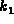
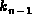
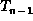
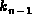
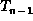

Data Structures and Algorithms
with Object-Oriented Design Patterns in Java
Data Structures and Algorithms
with Object-Oriented Design Patterns in Java
Consider the search for a particular item, say x,
in an M-way search tree.
The search always begins at the root.
If the tree is empty, the search fails.
Otherwise, the keys contained in the root node are examined to determine
if the object of the search is present.
If it is, the search terminates successfully.
If it is not,
there are three possibilities:
Either the object of the search, x, is less than ,
in which case subtree  is searched; or
x is greater than ,
in which case subtree  is searched; or
there exists an i such that for which
is searched; or
x is greater than ,
in which case subtree  is searched; or
there exists an i such that for which  ,
in which case subtree
,
in which case subtree  is searched.
is searched.
Notice that when x is not found in a given node, only one of the n subtrees of that node is searched. Therefore, a complete tree traversal is not required. A successful search begins at the root and traces a downward path in the tree, which terminates at the node containing the object of the search. Clearly, the running time of a successful search is determined by the depth in the tree of object of the search.
When the object of the search is not in the search tree, the search method described above traces a downward path from the root which terminates when an empty subtree is encountered. In the worst case, the search path passes through the deepest leaf node. Therefore, the worst-case running time for an unsuccessful search is determined by the height of the search tree.
 Copyright © 1998 by Bruno R. Preiss, P.Eng. All rights reserved.
Copyright © 1998 by Bruno R. Preiss, P.Eng. All rights reserved.